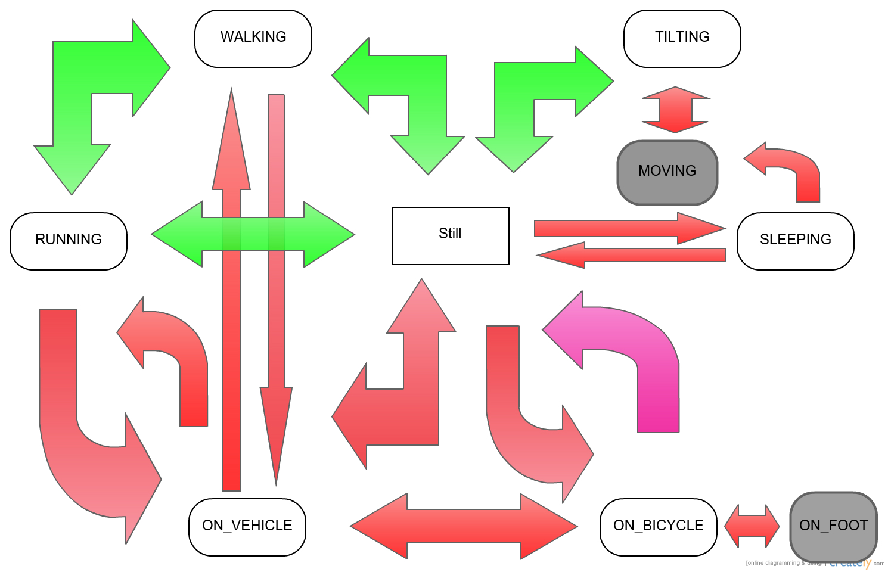
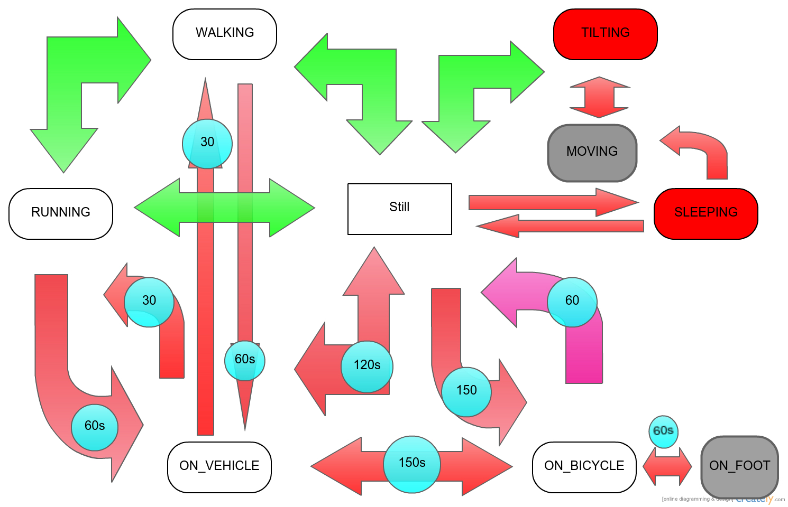

Google API is an out of context activity recognition engine meaning that the output is by no means relevant to what was previously happening or the situation the user did that certain activity. In the context of continuous and 24/7 activity recognition and reporting we come across a huge number of detected activities that fall within one of these categories:
All these three items together prove to cause a fairly large amount of noise in the sample data we gathered and therefore make it hard to provide useful reports.
Our proposed solution attacks the problem in two different vectors:
There is always a large number of recognized instances that are single incidents in a continuous run of correct recognitions. By introducing and legalizing the state transitions from activities to each other we try to detect when an illegal transition occurs and log the correct activity instead.
transitionsdiagram" title="state diagram " />
* Note: In this diagram red transitions are illegal and green ones are allowed. *
[TBD] There are numerous ways of introducing context to the application using light and audio sensory input, location detection and history management, time of the day and the users interaction with the device. Afterwards the verified context can aid in validating both states and state transitions. For example a user will not start RUNNING right after he was SLEEPING and then continue to SLEEP again afterwards before the threshold passes; but since SLEEPING is not a sensory recognizable activity but a contextually deducible one, we need to introduce context detection and verification first.
Assuming that the user sleeps at home every night we would soon be able to generate a somewhat unique fingerprint of the surroundings of the user when he is at home and later on use that fingerprint to identify his status and therefore assume new set of illegal transitions based on that. We will use the wifi SSID and the cell tower identification information to store the fingerprint.
Now that we have established the fact that our user is staying at home for the time being we will try to find out what time he went to bed and what time he got out of bed and this is how we acheive it: 1. After 7pm every night we will periodically check the last activity;if it was still then we query last time of the day on which the device screen was turned on. If this number was over an hour ago we move to step two otherwise we check sleep until the end of this period. 2. Now we start to gather noise and light sensory input data every 30 seconds. If both are below a certain threshold for more than 20 minutes we assume the user went to bed in the timestamp that the screen went off in step one. 3. From now on every 5 minutes we check for user activiy and light and noise sensory input in order to make sure the earlier assumption is still correct. In case the sleep cycle is intrupted we will go to step one and start over. 4. The light data will be adjusted based on time of the day so that in the morning that does not count as being waked up anymore. 5. If the algorithm detects a wake up sequence after 4am in the morning it will not go back to step one again and will assume the user is awaken for good now.
Although it may sound trivial to describe a context as the opposite of another one, in our case if would be quite useful because the range of the activities that we are recognizing are predominantly performed outside of one's home. In the following graph's details you can see how the legallity of our transitions change based on these two contexts.

Q & A: